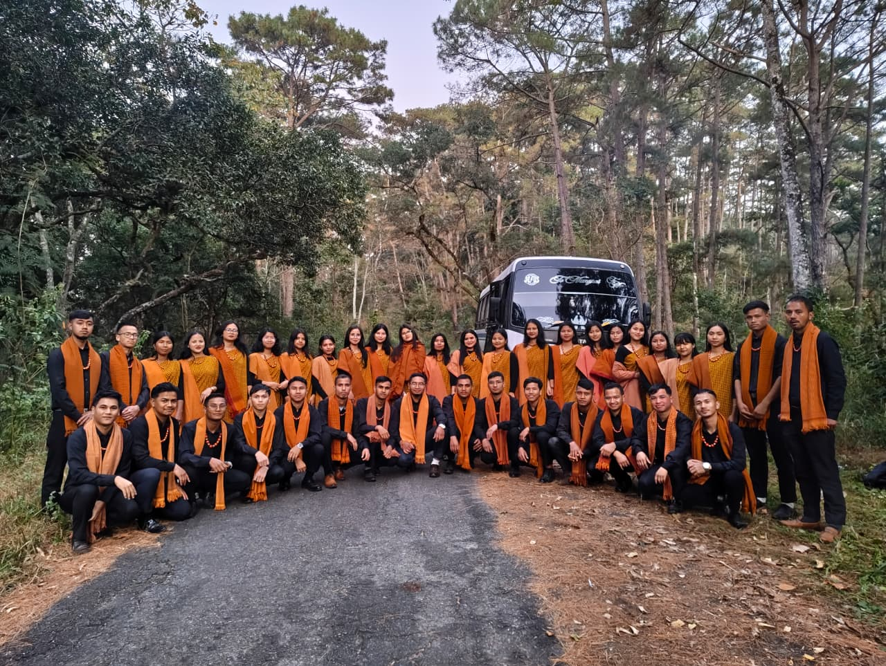
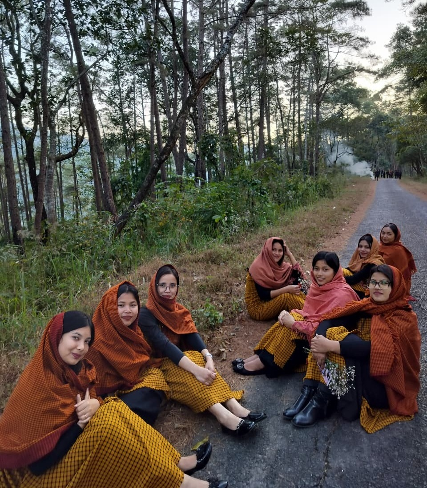
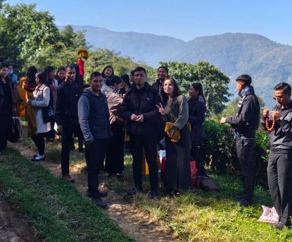
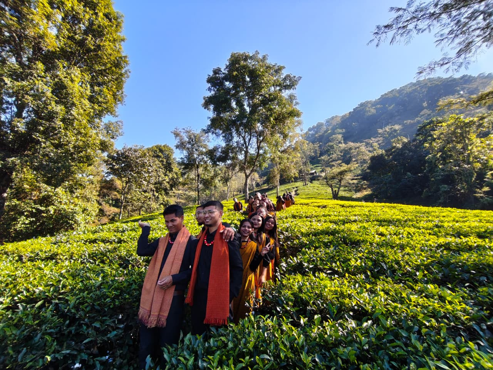
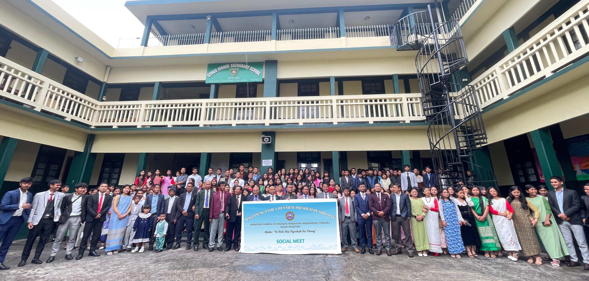
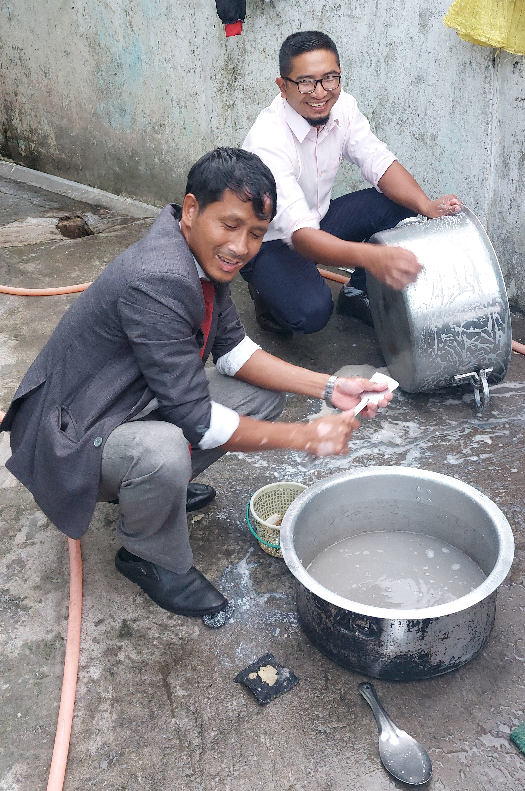
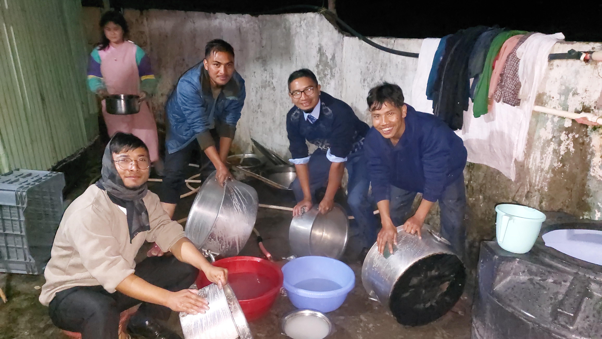
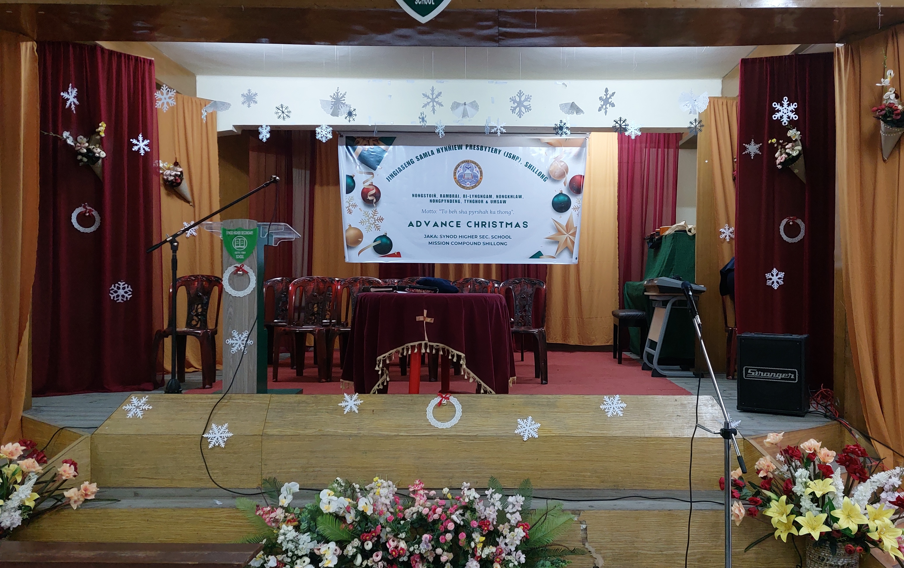
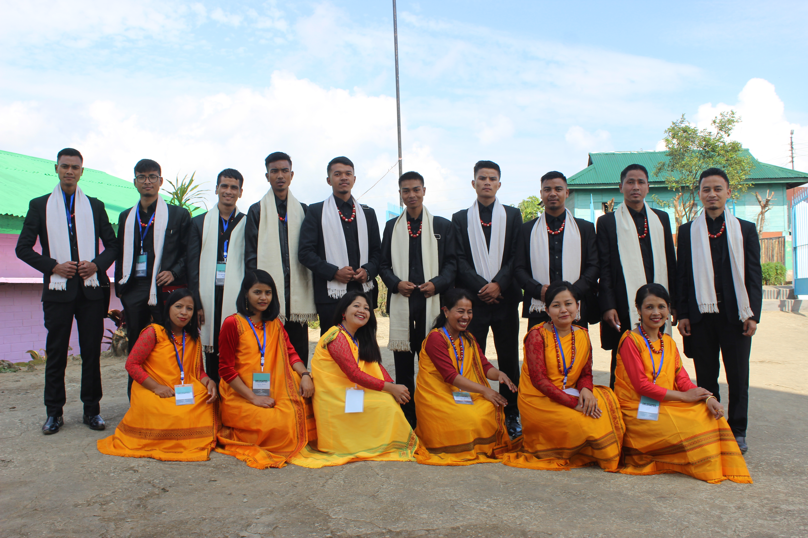
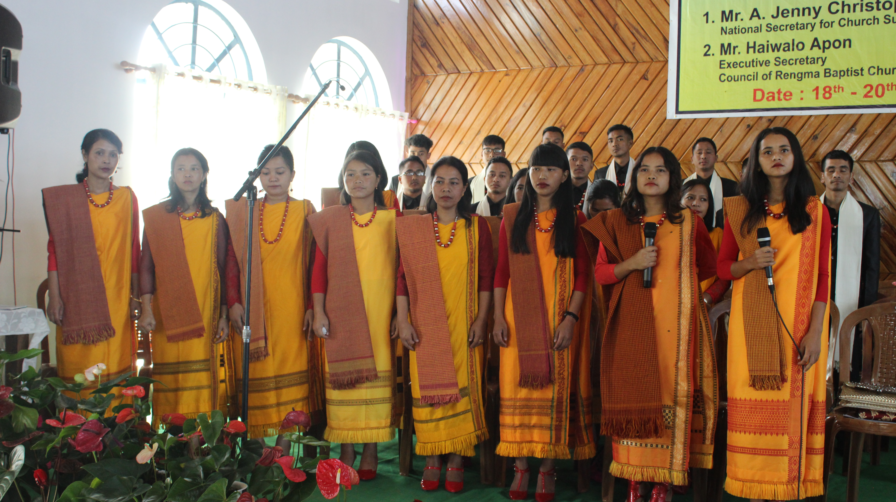

JINGÏASENG SAMLA HYNÑIEW PRESBYTERY SHILLONG
Nongstoiñ, Rambrai, Ri-Lyngngam, Nongkhlaw, Nongpyndeng, Tynghor & Umsaw
Motto: "To beh sha pyrshah ka thong"

PRESBYTERIAN CHURCH OF INDIA
Ha kaba nyngkong nyngshap eh ngi ai ka burom bad ka jingnguh ïa U Blei ba im, U Trai ka Balang, U trai ka kam. Baroh ki dkhot jong ka Jingïaseng Samla Hynñiew Presbytery Shillong ngi long tang ki shakri barit eh jong U.
Ka jingkylli kaba mih nyngkong eh ha ngi shwa ban sdang ïa kane ka Jingïaseng Samla hangne ha Shillong ka long, kumno ban sdang bad ha kano ka rukom ngin leh ban pynurlong ïa kane ka jingthmu? Kalong ka jingkylli kaba eh ban Jubab.
Hadien ba nga la dep ïathoh bad I Miss. Amelia Laloo na ka Balang Presbyterian Jaiaw haka snem 1986, nga la ïoh kam noh hangne ha Shillong ha ka snem 1987. Haba nga la sah hangne ha Shillong nga ïa syllok paralok hi kumno ban ïarap ïa ki parasamla kiba wan pule hangne ha sor, ba kin lait na ki jingsniew ba bun jait bad kumjuh ruh na ki jingshah ïalam bakla ha ka jingngeit. Ine I rukom pyrkhat I long tang kum I philiah barit eh i ba don ha ka dohnud jong ngi ha kito kipor.
Ha kito ki snem 1980-1990, kadon ka jingpynkhih kaba jur shaphang ka rukom pynbaptis bad don ruh shipun ki khun jong ki Balang bapher bapher kiba mih noh na ki Balang ha kaba kila leit pyn ïasoh noh sha ki kynhun ïasyllok kiba mih hangne ha Shillong kawei hadin kawei pat.
Kane ka jingsngew long nongkyndong ïa lade ka jur bha hapdeng ki khun Samla na nong kyndong khamtam eh kito kiba dang wan pule nyngkong hangne ha sor Shillong. Ki jingshem jingeh ban leit Jingïaseng lane kumno ban pynïasoh ïa lade bad ki Jingïaseng Samla ki ba don ha ki Balang bapher bapher hangne ha sor Shillong wat ban leit ban bam Sacrament ruh ki lehraiñ. Ki don artylli ki jingmih na kane ka jinglong:
- Ka pynlong ïa ki Samla ba ha ka sngi U Blei (Sunday) ka kylla long ka sngi ban leit kai sngewbha bad ki paralok sha ki jaka ïaid kai pyngngad kiba don hangne ha Shillong. Ha kane ka rukom suki suki ki ngam ha ki jingsngew bha pyrthei bad ki klet noh ïa U Blei.
- Don bun ki para Samla ki bym sngewnud ban leit Jingïaseng sha ki Ïingmane kiba heh bad itynnad jong ki Balang sor namar ba ki lehraiñ ïa ka riam ka beit la jong haba ïanujor bad ki parabangeit kiba riam bha riam miat ha ka sngi U Trai. Kumta lyngba ki paralok bunsien ki ju leit Bible study ha ki jaka bym da tip bha bad hangne bunsien ki shah ïalam bakla noh. Wat haduh kine ki sngi ruh ngi dei ban da husiar bha ïalade ngi shah pynthame ha kiba bun ki liang jong ka jinglong bad ka jingim khristan lyngba ki jinghikai bad ki rukom kiba pher bapher.
Naduh ka snem 1988 ngi la ju im jingmut kumno ban pynlong kam ïa kane ka rukom pyrkhat ban lumlang ïa ki para Samla kiba dei ki khun ka Balang Presbyterian na ki thaiñ Nongstoiñ ban ïoh pynlong Jingïaseng lang shisin shitaiew. Ngi la ju ïa kren paralok hi na ka por sha ka por bad kane ka ding ka la sdang ban pur suki suki na iwei sha iwei pat. Bunsien ka wan ka jingsngew thait sngew lwait haba ym don dak ei ei kaba ai jingkyrmen namar ba ki Samla pule ki leit bad ki wan na ka snem sha ka snem. Ainguh pat ïa U Blei ba ine i phliah ding barit im shym la lip noh.
Dei ha ka snem 1992-1993 ba U Blei u la sei ïa ki khun Samla kiba shitrhem ban trei ïa ka kam jong U kynrad kiba wan pule ha Shillong ngi la ïoh ban ïashong pyrkhat shaphang kane ka kam ha ïing jong ngi ha St. Joseph Jaiaw. Ngi don Ha kata ka janmiet 3 ngut –
- Mr. N.S Nongrem
- Mr. T.T Diengdoh
- Mr. R.G Syiemlieh
Ka jingbuh jingthoh ha ka proceeding register la thoh kumne- “Ka jingïalang kaba nygkong eh jong ki Samla na ki thaiñ Nongstoiñ baroh kawei na ka jingthmu ban pynlong Jingïaseng jongki samla kiba don hangne ha Shillong, ka ba la shong ha ka 20th November 1993 ha ïing jong I Mr. N.S. Nongrem ka la pyndep ïa kine ki kam harum:- Ki Samla kiba la poi ha kane ka jingïalang ki long:-
- Mr. N.S. Nongrem
- Mr. T.T Diengdoh
- Mr. D.S Lyngdoh
- Mr. R.G Syiemlieh
- Mr. P.L nongrang
- Mr. N. Diengdoh
- Mr. L.G. Nongsiej
- Chief Organiser: – Mr. N. S . Nongrem
- Recording Secretary: – Mr. T. T Diengdoh
-
Nongstoiñ Presbytery :-
- Mr. R.G .Syiemlieh
- Mr. Shimborlin
- Mr. John Robert Changreads
-
Rambrai presbytery :-
- Miss. Bethelda Lyngkhoi
- Mr. Grassland
-
Ri-Lyngngam Presbytey :-
- Miss. Blancynora Nongsiang
- Mr. G.T.C. Marweiñ
Ngim tip kumno ngin sdang ban pynlong Jingïaseng hynrei da ka jingïalam bastad jong U Blei ngi la ïoh ka jingshai ban ngin sdang ïa kane ka Jingïaseng lyngba ki Jingïaseng ïing ha ïingsah jong ki para Samla bad ki ïing jong kiba la don la kaïing kasem ruh kumjuh kiba dei na ka thaiñ Nongstoiñ, Rambrai bad Ri-Lyngngam. Ha kane ka jingïalang, ngi la ïakut ban sdang noh ïa ki Jingïaseng ha ka 5th December 1993 ha ïing jong I Mr. N. S. Nongrem ha Jaiaw St. Joseph.
Ka jingïalang kaba ar ka long ha ïing jong I Mr. N. S. Nongrem ha ka 28th November 1993, ha ka por 4 p.m. ki dkhot kiba ïawan ha katei ka sngi kilong kumne harum :-
- Mr. B.D. Marweiñ
- Mr. N.S. Nongrem
- Mr. Apsharailang Syiem
- Mr. Playmingstone Byrsat
- Mr. Shimborlin Puweiñ
- Mr. Letstanding Puwein
- Mr. Trusman Wahlang
- Mr. Goldenstar Syiemlieh
- Mr.Copperfiled Lyngdoh
- Mr. L.G. Nongsiej
- Mr. Stingdrowell Lyngkhoi
- Miss. Mandalin Lyngdoh
- Miss.Phyrnia Nongsiej
- Mr. Ayub Rani
- Mr. Thanlijoy Diengdoh
- Da ka wei ka jigngmut la ïa mynjur ba ka kyrteng jong kane ka Jingïaseng Samla ka long “ Nongstoiñ Christian Youth Organisation”(N.C.Y.O).
- Dei ruh ha kane ka jingïalang bala shim ïa ka rai ban jied noh ïa ki nongkitkam jong kane ka Jingïaseng Samla kine harum ki long ki nongkitkam ba nygkong eh jong ka Jingïaseng Samla:-
- Chairman: – Mr. B. D. Marweiñ
- Vice-Chairman: – Mr. L. G. Nongsiej
- General Secretary: – Mr. N.S. Nongrum
- Joint Secretay: – Mr. T. T. Diengdoh & Mr. Trusman Wahlang
- Finance Secretary: – Mr. R. G. Syiemlieh
- Treasure: – Mr. Stingdrowell Lyngkhoi
- Singing Secretary: – Mr. T. T. Diengdoh
- Statistic Secretary: – Mr. P. Byrsat
- Adviser: – Rev. B.C Lyngdoh & Rev. P. Dkhar
Ki snem 1993 haduh 2000 ki dei ki snem kiba eh bha kaba ki khun samla ki wan pule hangne ha Shillong na ka thaiñ Nongstoiñ ki don ka jingangnud kumno ban im ka jingim kaba tipbriew tipblei. Kum ki khynnah pule ki don tang 2 tylli ki thong kiba kongsan eh bad kita ki long - kaba nyngkong eh ka long ban long ki nongjop ha ka jingpule. Ka jingangnud bad ka jingthmu kaba ha khmat eh (Aims and Objectives) jong ki haba ki wan pule ha Shillong ka long ba ki dei ban poi sha ka thong ban ïoh ïa ka kyrdan ka jingnang jingstad bad ka jingjop kaba don burom. Ka thong kaba ar ka dei ka jingim tipbriew tipblei. Kum ki samla Khristan ki don ka jingangnud bad ka jingkut jingmut ban im ka jingim kaba ïadei dur bad ka mon ka jong U Blei. Ka Motto jong ka Jingïaseng Samla "To beh sha Pyrshah ka thong" (Phillipi 3:14) ha ka jingim bad jinglong mynsiem kum ki Khristan ngi don ka jingangnud ban poi sha ka thong bad kata ka thong ka long ban ïoh ïa ka jingpynim kaba dei ka jingim bymjukut. Ban poi sha kane ka thong ka long ba ngi dei ban beh lane ban phet sha pyrshah ka dak ban ïoh ïa ka jingïathong kaba long ka jingkhot shaneng ka jong U Blei ha U Khrist Jisu. Kum ki nongmareh thong ngim lah khlem da ïa kynduh ïa ki jingeh (Challenges) jong ka jingim wat ha ka jingshakri Blei bad aiti ïa lade ha ka kam U Kynrad. Ha kaba nyngkong leh se bun na ki kmie ki kpa, ki Balang, ki District bad ki Presbytery ki don ka jingartatien ïa la ki jong ki Khun Samla ba ka jingwan ïa snoh kti, jong ki bad kane ka seng kaba rit shano kan thew namar ki sngew sheptieng ba ïoh ki shah ïalam bakla noh ha ka nongrim jong ka jingngeit bad ka jingshakri Blei. Ka jingshisha pat ka long ba ka Jingïaseng Samla naduh ba sdang ïa ka, ka ieng halor ka nongrim kaba skhem ba kane ka Jingïaseng Samla ka dei ban don hapoh ka shatri bad thapniang jong ki Presbytery kiba don hangthie ha thaiñ Nongstoiñ baroh kawei. Ngi da thrang dik-dik ba ki Presbytery kin kdup ieit ia ngi ki khun samla kiba don hapdeng ki diengshiah jong ka pyrthei bad kumjuh ruh don shibun ki suri kup snieh langbrot kiba kwah ban khring sha ki rukom hikai ba bun jait kiba lah ban ïalam bakla wat ha ka jingshakri Blei. Dei na kine ki daw ba ka Jingïaseng Samla naduh u snem 1993 haduh 2000 ngi ïai angnud ban ithuh noh ïa ka da ki lai tylli ki Presbytery- Nongstoiñ, Rambrai bad Ri Lyngngam Presbytery kiba na ka thaiñ Nongstoiñ khnang ba wat la ngi don hangne ha sor Shillong ngin sngew kum ha la ka jong ka Balang bad ba ngin lait na kiwei pat ki jinghikai kiba lah ban ïalam bakla ïa ngi ki samla.
Ngi sngewnguh eh ïa kine ki Presbytery ba hadien ka jingkyrpad jong ka Jingïaseng Samla, ki la lah ban ïthuh (recognise) ïa ka Jingïaseng Samla naduh u snem 2000. Ngi ainguh eh ïa U Blei ba U la ïalam beit ha ka lynti kaba ngi dei ba ïaid kum ki khun jong ka Balang Presbyterian ban shakri ïa U Khrist bad ka Balang. Ngi pynpaw ruh ka jingsngewnguh ïa ki samla kiba la trei shitom ban rah ïa ka burom ka jong U Blei lyngba kane ka Jingiaseng Samla. Wat hapdeng ka jingbunkam jong ki ha ki jingpule hynrei kim ju klet ban shakri ïa U Blei. Kumta, ynda ka jingpule jong ki ka la kut, ki leit phai sha la ki shnong ki thaw bad ki Balang da ka jingjop bad ki da rah la ki jong ki song ki ban myntoi ïa ka Balang kaba ki don bad ka imlang sahlang. Don shibun ki nongïalam bad ki dkhot jong ka Jingïaseng Samla ynda ki la pyndep ïa ka jingpule jong ki, ki la kylla long ki nongïalam bad ki nongsharai ha ki Balang ba ki don, namar ba U Blei U la kyrkhu eh ïa ki ha ka jingim jong ki. Kane ka jingthoh ïa ka jingsdang jong ka Jingiaseng Samla ka long kaba jrong bad kaba kham bniah hynrei ym sngew lah kiar kumno ba ngi trei kam ha kito ki por ban saiñdur ïa kane ka Jingïaseng Samla. Wat la katta ruh lada kum iehnoh ïa ka kyrteng jongno jongno kiba la ïadon kti bha bad kiba la trei shitom met bad mynsiem ngi kyrpad ban ym sngew eiei namar ba ngi tip ba ïa ka kyrteng jong phi la thoh ha ka Kitab ka Jingim ha Bneng.
Nga ai khublei bad kitbok kitrwiang ïa ki khun Samla baroh ba kin nang kiew shaphrang haka jingpule bad ban nang aiti shuh shuh met bad mynsiem ban shakri ïa U Khrist bad ka Balang khnang ban ngin ïoh ïa ka thong kaba long ka jingpynim jong U Trai jong ngi U Jisu Khrist.









